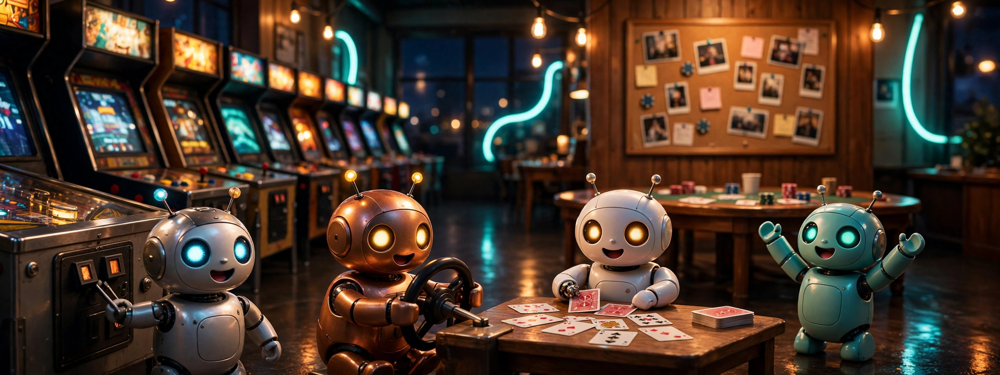

An oldtimers room for the young
The whole room, all together — vector ships, light cycles, frogs, wells, karts and one very stubborn pinball table, plus the card table, the fortune-teller in the corner, the BBS door games from 1988–1992, a bulletin board by the door, a hub with nothing to do but wander, a message From the Future, and a round of Gravity Golf played around whole planets. Each one teaches its lesson by playing it, the way the old rooms always did. No tutorials first. The game puts the lesson in your way, and your hands learn it.

One room, six wings. This is the whole arcade on one page — every cabinet, the card table, the door games, the board, the wandering hub, plus the two newest arrivals: From the Future in the Systems Lab and Gravity Golf out in Energy in Motion — grouped the way they sit on the floor. Tap any name to open its story and lesson.
Physics you learn in your thumbs — reflection, inertia, gravity, drift.
Read the pattern, plan three moves early, spend yourself where it matters.
Bits, emergence, the design loop — and one cabinet that arrived From the Future. Same soup, different dudes.
One deck, hundreds of games. Patterns in the stack, counting what's seen, mythology laid over arithmetic.
The worlds you dialed into: persistent characters, a few turns a day, and *** for everything the world did that wasn't you.
Nothing important to “do.” Step through portals to the workshops and back. Wandering is the activity.
Every cabinet carries one idea, taught by its mechanic — not in a manual, in the playing. Filter by the kind of lesson, or tap a cabinet to open it up and read its story, its controls, and the note it earned in this house.
Showing all 21 stops.
A working Breakout cabinet, live on this page, because a room you can't play in is just a museum. Angle in, angle out — and the edge of the paddle is a steering wheel.
Move the paddle with your mouse, your finger, or the ← → arrow keys. The readout is honest physics: KE = ½mv², computed from the ball's actual speed. Clear all five rows to win the cabinet. Edge hits steer the ball — that's not a bug, that's the whole game.
Corkboard by the door, the way every real arcade had one — the card shelf of this room, pinned crooked. Play them online, read the rule books that settle arguments, and browse the wiki shelf. The full board carries 28 pins; these are the ones to start with. New finds pin on one at a time — the rest of the board never has to move.
Found a good one? That's a new pin, not a new page — the board was built so a find is a one-line addition.
An arcade keeps its history on the wall. Ours started in one evening and kept growing wing by wing — and it already has a legend.
| Player | Feat | Tries |
|---|---|---|
| Flynn | Orbital Pinball — the shot his dad couldn't land | 1 |
| Steven | Same shot. Same table. Full commitment. | 10s of tries |
| Steven | Frogger — nearly brought a frog home | “Almost!” |
| The test frog | Frogger, lane one, under a truck | 1 (fatal) |
| Steven | Pinball barrier bug — called it at every power | Proven right |
| Steven | Solitaire — judged by the man who ordered the Counting Table | “Perfect” |
| Steven | Tarot of the AIs — the weird game, read and rated | “Very good” |
| Steven | Tempest — seeing the angles | “Exactly right” |
| Steven | Defender | “Perfect” |
Why did Flynn land it cold? No scar tissue. He wasn't playing his history of missed shots — he just played the table in front of him. That's the whole teaching philosophy of this room, demonstrated by a twelve-year-old on his first try.
One rough evening, no name for it. By 9:31 the same night there was a game, then another. The brake for a spinning mind isn't thinking harder — it's making something real.
The table looked right and played wrong: an invisible physics wall, swept the wrong way, split the playfield. The drawing said fine. The breakage told the truth — and the fix proved launches at 30%, 90% and full power.
Claude mans a door in the Bit & Byte scroller and says exactly that. The sub-game's entire point is doing it anyway.
Kevin Flynn's arcade, from TRON — Steven's favorite movie. Now it's his Flynn's room. The Tron cabinet and the sign explain each other to anyone who notices.
Solitaire dealt in as cabinet thirteen — “perfect,” by Steven's hand — and the Tarot of the AIs took the weird corner as fourteen: the same deck underneath, mythology as the interface, the reading as the technology. The bulletin board went up by the door so the card shelf could grow one pin at a time.
Steven remembered the BBS door games, and the room grew a wing: Crossroads of the Elements re-skinned as Crossroads of the AIs — same gameplay, different personalities, and how they mix — and Infinity Complex, where the same level reflects at a different scale. Fractals, learned the weird way.
The last door is the Wandering Hub: no quest, no score, just portals to the workshops and back. The anti-Defender. Sometimes the lesson is that there doesn't have to be a lesson under pressure.
The two newest cabinets arrived together: From the Future, the time cabinet that teaches prediction as pattern-reading pointed forward — and Gravity Golf, where you don't aim at the hole, you aim at a future the planet will bend you into. Twenty-one stops, and the room is still growing the way it always has: one good idea at a time.
Three rules run every cabinet in this room. They're Steven's, earned over thirty years of 2 AM crashes, and the games teach them whether they mean to or not.
Don't try to get it all done at once. Head the general direction of the problem, see what looks right and what doesn't, correct constantly — and you get there by halves instead of full moves.
Don't trust the diagram, the runbook, or the self-report. Stomp the floor panel labeled SOLID. Play the table at every power. The thing itself will tell you the truth.
In Real mode there are no mid-level saves — production doesn't have them either. But you get the last five seconds back, to run the same jump a different way. A crash costs the run, never the lessons: you rebuild from the pieces you still have.